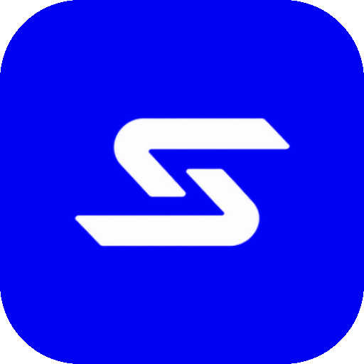

CRÍTICO
Brand book
The Night Watch Plat
Seis colores. Cyan es una línea. El plat queda fuera de la app.
Wordmark

Tus cámaras ya ven. Ahora también entienden.
Infraestructura de seguridad deep-tech. Futurista, mínima, confiada. Navy de operaciones, cream de instrumento, cyan de mira.
Color
Exactamente seis. Nada más.
Balance de pantalla: navy 60% · cream 25% · white 15%. Cyan no entra en ese balance.
Night Watch Navy
Signal Cream
Detection White
Sightline Cyan
Senti Charcoal
Link Green
Poppins 500–800
Título de página
Título de alerta
Subtítulo de página
Título de tarjeta
Ítem de navegación
Cuerpo. El video nunca sale de tus instalaciones.
Etiqueta de botón
Etiqueta de sección
Minutos analizados
1,284
Componentes
Instrumentos planos. Cyan solo en el trazo.
Botones y chips
Métrica
428
Minutos analizados
Iniciar sesión
Acceso al centro de monitoreo
Ingresa con la cuenta de tu organización.
Severidad
Sin rojo. Sin naranja. Sin un séptimo color.
El estado usa forma: ● nuevo · ◐ en revisión · ○ resuelto.
ALTA
Fuera de horario
MEDIA
Merodeo
BAJA
Movimiento
Senti
¿Cuántas intrusiones hubo esta semana en la bodega?
Motivo
Plat de ciudad solo en el pitch público.
Calles cyan al 28%. Puntos con glow. Nunca detrás de texto denso. Nunca dentro de la app.
Las cámaras graban, pero nadie las mira todo el tiempo.
Reglas
Lo que el sistema permite y lo que no.
Hacer
- Leer tokens de
theme/tokens.toml. - Cyan como línea de 2px.
- Invertir cream en uno o dos objetos.
- Cuerpo, listas y Senti dentro de frames opacos.
- Estados con ● ◐ ○ y etiqueta en español.
- 32px alrededor del wordmark.
No hacer
- Un séptimo color o un rojo de severidad.
- Rellenar con cyan o trazar cyan sobre cream.
- Plat dentro de la app, el login o el sidebar.
- Glass, blur o degradado fuera de Senti.
- Sombras en botones, cards o tipo.
- Tipo bajo 13px o peso bajo 500.
Medidas
| Token | Valor | Uso |
|---|---|---|
| sidebar | 280px | Columna fija |
| wordmark | 220 × 32px margen | Nunca toca el borde |
| panel | 16px / 24px / 2px | Radio, padding, borde |
| botón | 48px | Altura mínima |
| nav | 52px | Altura de ítem |
| prioridad | 6px | Barra izquierda crítico / alta |
| composer | 24px / 16px blur | Solo Senti |
| split | 68% / resto | Video y panel secundario |